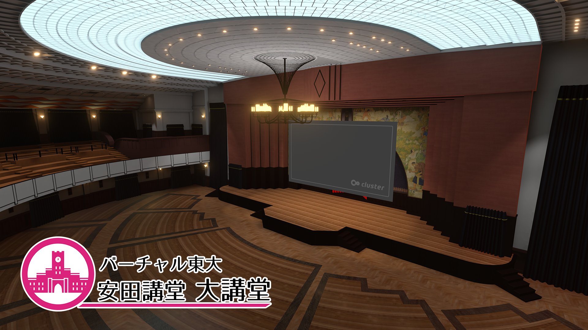
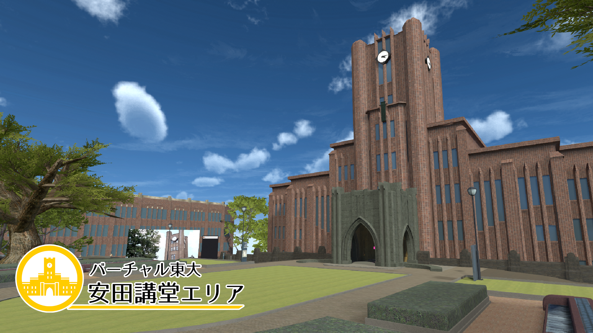
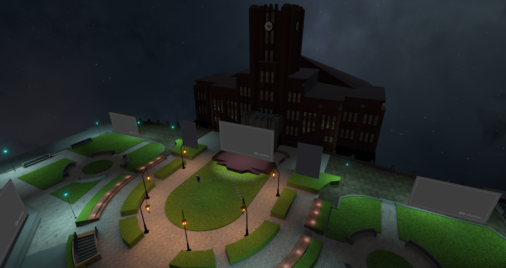
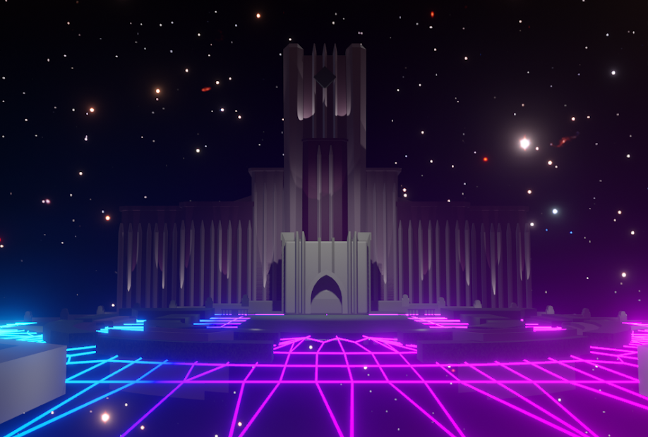

バーチャル東大
東京大学総長賞 大賞 — バーチャル東大の構築と公開

Overview
コロナ禍の中で東京大学のキャンパスをVR空間に構築し、高校生のためのオンラインオープンキャンパスとして公開したプロジェクトです。安田講堂をはじめとする主要建物を再現し、来場者がアバターで歩き回りながら大学の雰囲気を体験できるようにしました。
本プロジェクトは「東京大学総長賞」大賞を受賞しました。
Team & Role
Tech Stack
Unity, C#, VR / XR
Media


